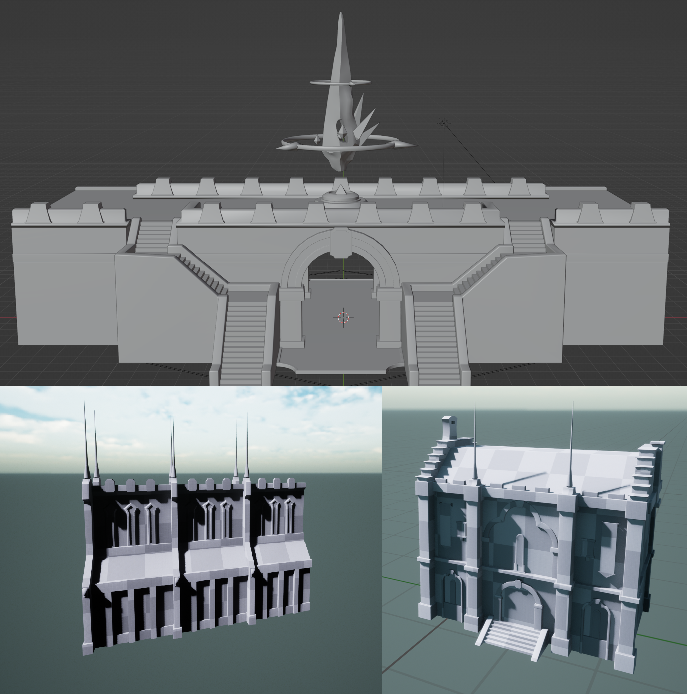

A 3D scene of Camp Dragonhead from Final Fantasy XIV, created in a 3D pixel art style inspired by Octopath Traveler and similar games.
Software Used: Unreal Engine 5, Blender, Pyxel Edit, Photoshop
I modeled everything in Blender and set up the scene in Unreal Engine 5. I drew the character sprites in Pyxel Edit. For the textures, I mostly used Pyxel Edit along with some Photoshop, mostly for 1:1 UVs and generating normal maps. On some textures, the Photoshop normals didn't get the effect I wanted so I drew custom normals in Pyxel.
Most of the textures are handmade, except for a few of the particle effect textures, where I used Unreal's built-in noise textures multiplied with a base color. To make these blend better with the pixel textures, I ran them through a simple material function to create a pixelated effect on the final material.
I find that blending 2D sprite characters with the 3D environment is one of the most interesting challenges for this kind of project. My experience working on Witch was helpful in making the effect work in this scene. Most of the effect comes down to adjusting specific camera settings and post process effects, along with carefully composing the scene with the intended camera angle in mind.
Early progress shots of some of the larger models. For the wall segments, I created a simple wall construction blueprint that spawns a set number of wall instances and caps it on either end with a tower or a staircase piece. I wouldn't normally do that for a static scene, but it worked well in this case as it made experimenting with the wall placement easier.

Some of the textures I made for the project.